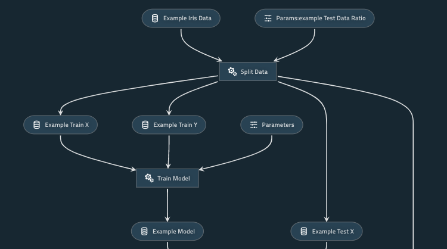
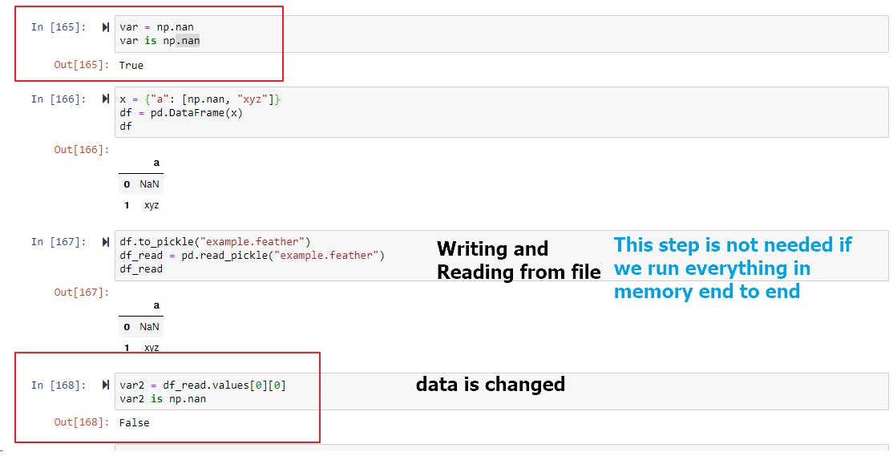
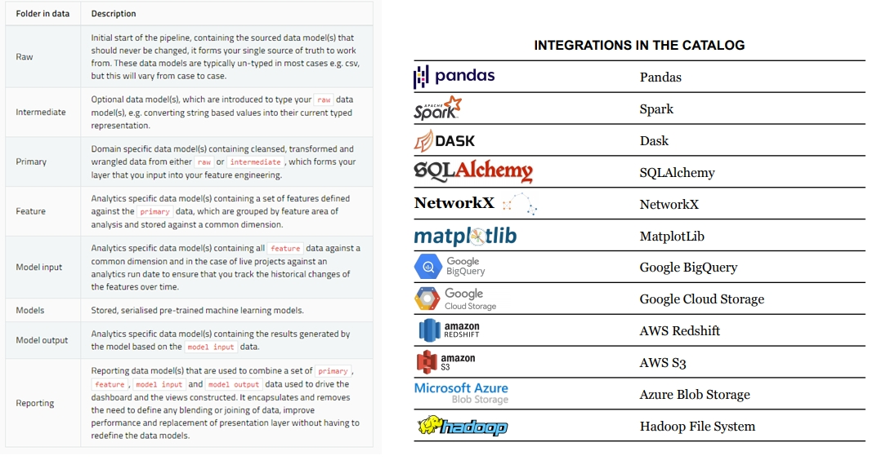

k = 10
def func3(x):
return x+kIntroduction to Kedro - pipeline for data science
python
kedro
Kedro
Why we need a pipeline tool
Data Scientist often starts their development with a Jupyter Notebook. As the notebook grows larger, it’s inevitable to convert it to a python script. It starts with one file, then another one, and it accumulates quickly. Converting a notebook could be more than just pasting the code in a script. It involves careful thinking and refactoring.
A pipeline library can be helpful in a few ways: - modular pipeline, it can be executed partially. - easily run in parallel - check for loop dependecies
What is Kedro
Kedro is a development workflow tool that allows you to create portable data pipelines. It applies software engineering best practices to make your data science code reproducible, modular and well-documented. For example, you can easily create a template for new projects, build a documentation site, lint your code and always have an expected structure to find your config and data.
Kedro is a lightweight pipeline library without need to setup infracstructure.
In comparison to Airflow or Luigi, Kedro is much more lightweighted. It helps you to write production-ready code, and let data engineer and data scientist work together with the same code base. It also has good Jupyter support, so data scientist can still use the tool that they are familiar with.
Functions and Pipeline
Nodes
def split_data(data: pd.DataFrame, example_test_data_ratio: float):
...
return dict(
train_x=train_data_x,
train_y=train_data_y,
test_x=test_data_x,
test_y=test_data_y,
)Node is the core component of kedro Pipeline. For example, we have a python function that split data into train/test set. A node take 4 arguments. func, inputs, outputs, name. To use this function as a node, we would write something like this.
node(split_data, inputs=["example_iris_data", "params:example_test_data_ratio"],
outputs= dict(
train_x="example_train_x",
train_y="example_train_y",
test_x="example_test_x",
test_y="example_test_y",
),
name="split_data")It’s fairly simple, and it resemble the original function. The only significant difference is, split_data takes a df and float, but in our nodes, it becomes a list of strings. I will explain it in Section 3.2.
Pipeline
Pipeline is nothing more than a list of Node, it helps you to reuse nodes for different pipelines
Pipeline([ṅode(),
[node(),
...]])Here is an simple Pipeline which does splitting data, train a model, make predictions, and report metrics.
def create_pipeline(**kwargs):
return Pipeline(
[
node(
split_data,
["example_iris_data", "params:example_test_data_ratio"],
dict(
train_x="example_train_x",
train_y="example_train_y",
test_x="example_test_x",
test_y="example_test_y",
),
),
node(
train_model,
["example_train_x", "example_train_y", "parameters"],
"example_model",
),
node(
predict,
dict(model="example_model", test_x="example_test_x"),
"example_predictions",
),
node(report_accuracy, ["example_predictions", "example_test_y"], None, name='report1'),
node(report_accuracy, ["example_predictions", "example_test_y"], None, name='report2'),
]
)You can also use node tags or writing different defined pipeline to reuse your node easily.
Kedro Viz
Internally, Kedro always form a graph for your entire pipelines, which can be visaulized with this command.
kedro viz
This starts a web server that visualizes the dependencies of your function, parameters and data,you can also filter some nodes of function with the UI.

Kedro Run, partial pipeline, parallel execution
You can execute your pipeline partially with this command. This with execute your pipeline from A to C except the last Node D.
kedro run --from-nodes="A, B, C"
If you pay attention to this graph, Node B and Node C has no dependency, they only depend on Node A. With kedro, you can parallelize this execution for free by using this command.
kedro run --parallel
Functional programming
Now, you have basic understand of what is Node and Pipeline, you also learnt that you can use kedro run command to execute your pipeline with different options. Before I jump into other kedro features, let me explain a bit more about functional programming. This concept is at the heart of data processing library like spark.
Functional programming, means using functions to program literally. It may sounds silly, but bear with me.
Pure Function has these characteristics: 1. No side effect, it won’t change state outside of the function scope. 2. If you repeating running the same function with same input(argument), it should give you the same output. 3. Easy to parallel if there is no data dependency
Consider this simple function that add 1 to your input:
def func1(x):
x=x+1
def func2(x):
return x+1var1 = 1
var2 = 1
func1(var1) # var1=2
func2(var2) # var2=2They both add 1 to your input, so which version is a better function?
func1(var1) # var1=3
func2(var2) # var2=2 Now consider if we run this function twice. func1 changes the result to 3, while func2 still give you 2. I argue func2 is better in this case.
Why does this matter? Or how is it going to be useful at all? Well, it makes debugging much easier. It is because you only need to debug code inside a function, not 200 lines of code before it. This greatly reduce the complexity that you have to worried about your data. This fundamental principle is what powering the pipeline, and the reason why you can just use kedro run --parallel to parallelize some computation.
It will also be easier to write test for function. func1 is harder to test, because you need to consider all possible code path. You may end up need to write verbose test cases like this.
def test_case1():
func_A()
func_B()
def test_case2():
func_A()
func_A()
func_B()How does using Kedro helps to achieve this? Think about func1, if it is written as a Node, it will look like this.
Node(func1, inputs=var1, output=None, name="func1")Since it is a Node without any output, it will have no impact to the downstreams. In order to use that variable, you will naturally writing code looks more like func2 instead.
Let’s look at one more example.
func3(10)20Now consider func3, it is a valid Python function. You can run it in a notebook or in a script, but it wouldn’t be possible for a Node, sinec a Node only have access to its input. It will just throw an error to you immediately.
node(func3, inputs='x', outputs='some_result', name='func3')By writing nodes, you limit your function to only access variable within its scope. It helps to prevent a lot of bug.
Decompose program to pipeline is not just copy and paste
I hope the examples demonstrate how writing nodes help transform your code towards functional style. In reality, decoupling your functions from a programming is not straight forward.
Consider this example. 
Look at how data np.nan is changed. This wouldn’t be a problem if we have one program, since we will just passing all variable in memroy, without the step that writing and reading from a file.
Error like these are subtle and dangerous, it may not throw error, but ruining our features quality. We have better chance to catch these error in a small program, but it would be much harder to isolate the issue if we have 1000 lines of code. The sooner you integrate it into your pipeline, the easier the integration is. In fact, we can do better. We could introduce test case for validating data, I would explain more in Section 3.5.
Data Catalog & Paramaeters
 Data Catalog is an API for Dataset. It includes a Data Model from from raw data, feature, to reporting layer and a standard Data I/O API. It integrates with pandas, spark, SQLAlchemy and Cloud Storage.
To use Data Catalog, you would first need to define your dataset in the catalog.yml. You will have give it a name and type, denoting whether it is a SQL query or a CSV. Optionally, you can pass in any arguments that are supported from the underlying API as well.
example_iris_data:
type: pandas.CSVDataSet
filepath: data/01_raw/iris.csvConnect Data Catalog with Node
Let’s reuse our split_data function. When you create a node that using the split_data function, you would pass in the string of the dataset instead of an actual dataframe, the Reading/Writing operation is handled by Kedro, so you don’t have to write to_csv() or read_csv() yourself.
parameters.yml
example_test_data_ratio: 0.2A node using the split_data function.
node(split_data, inputs=["example_iris_data", "params:example_test_data_ratio"],
outputs= dict(
train_x="example_train_x",
train_y="example_train_y",
test_x="example_test_x",
test_y="example_test_y",
),
name="split_data")Here the inputs “example_iris_data” is refering to a dataset defined by catalog.yml, kedro will load the csv for you. Same applies for params:example_test_data_ratio.
By using catalog and parmaeters, it already makes your program cleaner. You now have a single file to manager all data source, and a single file contains all parameters, which is configurable. Your functions now is parameterized, you can simply change configuration in a single file without going into every possible script to change a number.
Data Catalog abstract away the Data I/O logic from the data processing function.
It process data and write a file.
def process_data(df):
... # do some processing
df.to_csv('xxx.csv')It only process data
def process_data(df):
... #do some processing
return dfThis applies the single-responsibility principle (SRP), meaning that your function is only doing one thing at a time. There are many benefits from it, for example, it makes data versioning easier. I will explain this in Section 3.3.
Memory Dataset (optional to skip)
Remember our we pass in a string to our node, and it will look for the corresponding dataset? What if we do not define it? It could be a lot of work if we need to define everything. Besides, some variable are not needed to be written out as a file, it could just stay as in memory.
In fact, kedro use MemroyDataset by default. Which means you could simply pass in a string that is not defined, the string will be use as the name of the variable. There are more useful dataset like CacheDataset, you can find more details in this link.
https://kedro.readthedocs.io/en/stable/kedro.extras.datasets.html
p.s. When using kedro pipeline, you only define the node’s inputs and outputs, but you never defined the order of execution. From my experience, there are pros and cons. The benefits is, your code is less coupled, and due to this, kedro is able to execute your pipeline in parallel whenever possible to speed up your program. However, it means the order of execution is not guaranteed, this may cause unexpected effect. For example, if you are training a machine learning model, it is common to set a random seed at the beginning. Due to the randomness of execution, you may not get identical result, as the order of execution is different everytime, thus the sequence of the random number used is random too. In general this is not a big problem, but if you have a strong need to make sure you have identical output (e.g. regression test), it may cause some trouble and you need to use dummy input and output to force kedro run your pipeline in a specific order.